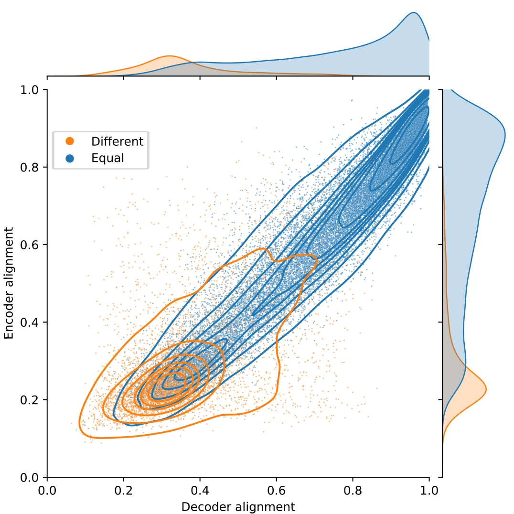
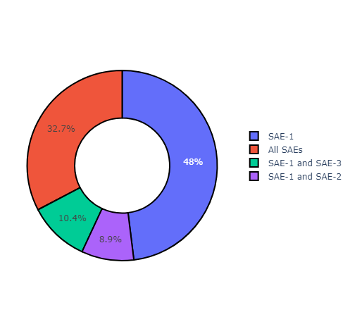
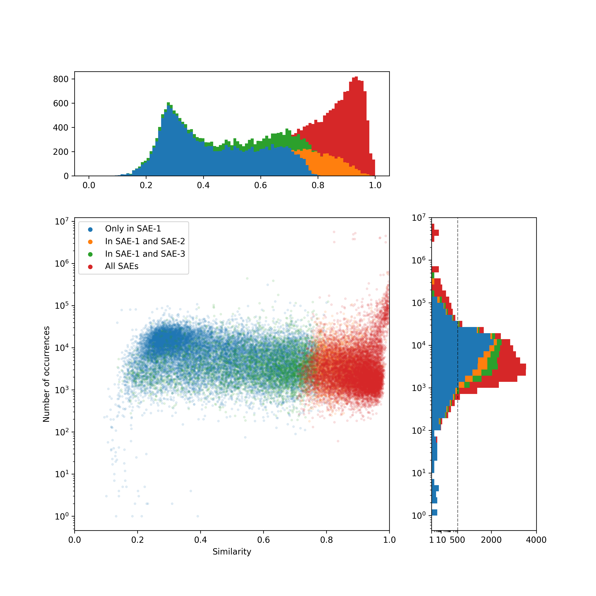
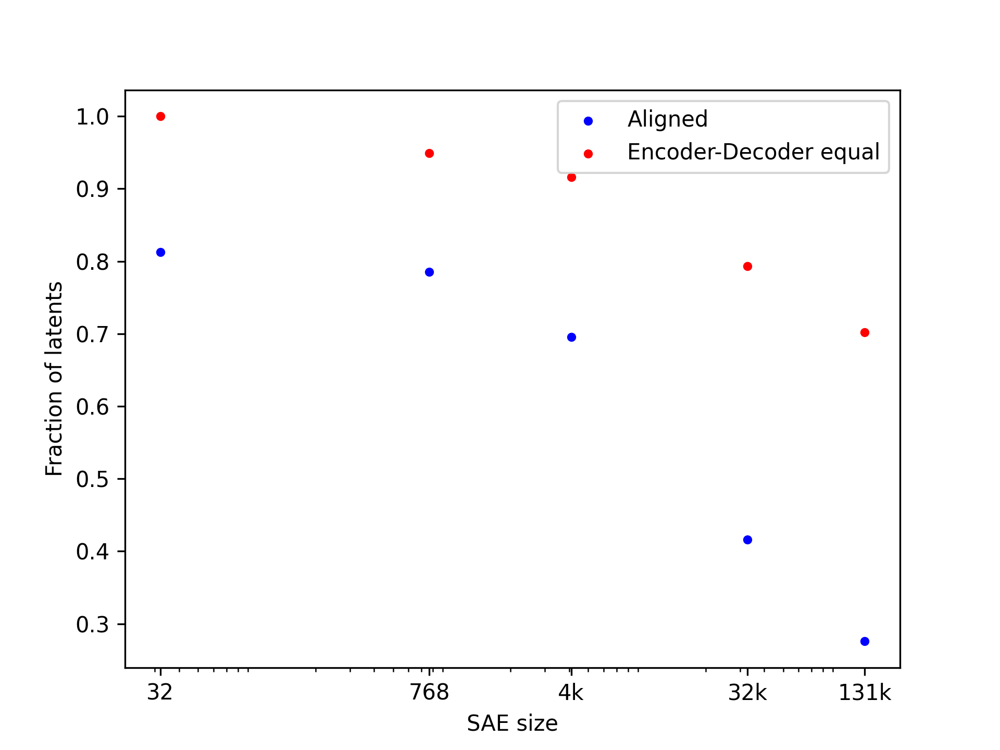
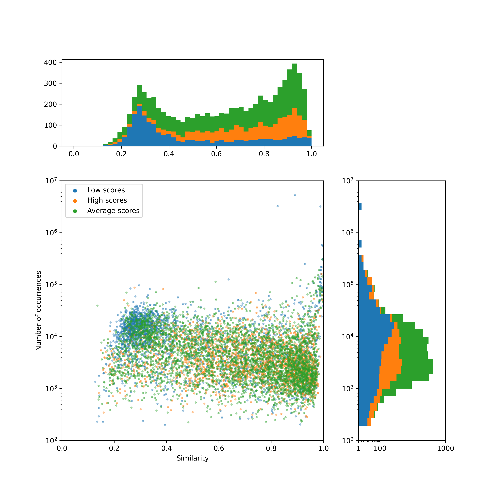
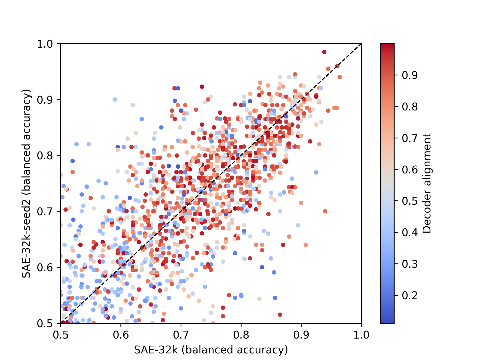

In this post, we show that when two TopK SAEs are trained on the same data, with the same batch order but with different random initializations, there are many latents in the first SAE that don't have a close counterpart in the second, and vice versa. Indeed, when training only about 53% of the features are shared Furthermore, many of these unshared latents are interpretable. We find that narrower SAEs have a higher feature overlap across random seeds, and as the size of the SAE increases, the overlap decreases.
This is consistent with evidence from the feature splitting and absorption literature. The fact that the learned features found by SAEs are not atomic, and that meta SAEs can decompose them, already indicates that the features learned by SAEs can be somewhat arbitrary (Anonymous 2024). Not only that, as SAEs are trained at larger sizes, feature splitting is accompanied by feature absorption (Chanin et al 2024), where some latents gain an “implicit” meaning along with an “explicit” feature interpretation. In the cases where multiple different “absorptions” lead to similar losses, models can learn disjoint representations.
This phenomenon may depend on the SAE architecture. Prior work using a somewhat different methodology to ours found that ReLU SAEs trained with an L1 penalty are quite stable under different seeds (Anonymous 2024). Another paper found that TopK SAEs could be improved by training two different seeds and forcing them to be “aligned” (Marks et al 2024). A recent benchmark of feature splitting (Karvonen et al 2024) showed a similar result, where JumpReLU and TopK latents had a higher feature splitting rate than L1 SAEs.
Aligning SAEs with different seeds
We train SAEs of different sizes on the MLP at layer 6 of Pythia-160m. For all SAEs we use the same data order, and for each size we train 2 SAEs with different random seeds. The SAEs are trained for 8B tokens of the Pile.
In order to measure the degree of alignment between independently trained SAEs, we use the Hungarian algorithm to efficiently compute the matching between their latents which maximizes the average cosine similarity between the matched encoder/decoder vectors. This average cosine similarity after matching can be used as an overall alignment score. Whether to use encoder or decoder vectors for matching is a hyperparameter in this approach, although we find that the two options usually yield the same matchings (Figure 1).
Looking at the distribution of cosine similarities after matching, we observe that there are two modes in the distribution, one of high similarity and another of low similarity. Overall, cosine similarities for encoder and decoder vectors are strongly correlated. We observe in cases where encoder and decoder matchings disagree (colored in orange), the cosine similarity is usually low, whereas similarities are higher when the encoder and decoder matchings agree (colored in blue).

Fig.1 Alignment of a 32k latent SAE trained on the sixth MLP of Pythia 160m. Each latent is colored by whether the Hungarian algorithm finds the same pair when using the decoder and encoder directions. The average alignment of points with equal decoder and encoder indices is 0.72 and of the ones that have different indices is 0.33.We consider a latent X in SAE A to be “shared” in SAE B if and only if X is matched to a latent Y in B with which it has cosine similarity greater than 0.7 according to both the encoder and decoder weights. We chose this threshold because it excludes over 99% of latents where encoder and decoder matchings disagree (Figure 1). By this definition, only 53% of latents are shared across our two independently trained SAEs.
We now consider a third SAE with the same data order, but a seed different from the other two. We find that the majority of latents shared between SAE 1 and SAE 2 are also shared between SAE 1 and SAE 3. The number of latents of SAE 1 that are not shared with any other SAE goes down from 47% to 35%, see Figure 2.

Fig.2 Overlap between 3 SAEs. We consider a latent X in SAE A to be “shared” in SAE B if and only if X is matched to a latent Y in B with which it has cosine similarity greater than 0.7 according to both the encoder and decoder weights.We find that the latents that most frequently fire in SAE 1 are the ones that are shared in SAE 2 and SAE 3, and that the ones that most infrequently fire in SAE 1 are the ones that appear only in SAE 1, see Figure 3. Interestingly, a significant number of latents that are considered to be part of only SAE 1 have a higher firing rate on average than latents that are in all SAEs. We believe this to be evidence of feature splitting/absorption, where different seeds lead to different tokens/concepts absorptions but are still working on better ways to measure this.

Fig 3. Similarity vs. frequency. We plot the cosine similarity between matched latents, vs. how often the latent fires in SAE 1. Because of the imposed threshold on considering latents as shared, all latents with similarity < 0.7 are considered to be only in SAE 1, even though a large fraction of those latents fire more frequently than some of the latents that are present in all seeds. The alignment of each latent is computed as the average of the cosine similarities of the encoder and decoder vectors. The histograms in this figure are stacked, and the histogram of number of occurrences has a log-scale from 0 to 500, to highlight the few latents that rarely fire or that fire a lot, and a linear-scale from 500 to 4000. Latent occurrences were collected over 10M tokens of the Pile, the same dataset that the SAEs were trained on.Dependence on the SAE size
We find that larger SAEs have larger fractions of unshared latents. Even if we use a more forgiving metric for considering features to be shared— namely, that the indices of the encoder match the indices of the decoder— there are still >30% “different” features when we consider a SAE with 131k latents. Unfortunately, we can’t really go to larger sizes with our current setup, as the SciPy implementation of the Hungarian algorithm on SAEs with 131k latents takes 8h and uses 300+ GB of RAM, with the algorithmic complexity being O(N^3).

Fig.4 - Fraction of aligned latents for SAEs of different sizes. Here, we report the fraction of latents where with both encoder and decoder cosine-similarity > 0.7 (labeled "Aligned" above) as well as the fraction of latents where the encoder and decoder matchings are the same, irrespective of the cosine-similarity value.Are unshared latents interpretable?
We are interested in finding out whether the unshared latents are interpretable or not, to look for “interesting” latents that can be found in one seed but not another. We use auto-interp to find an interpretation for 7,000+ latents of the two 32,768 latent SAEs. We use detection scoring (Paulo et al. 2024), evaluating the explanation over 100 active sequences and 100 non-active sequences. The average score of the explanations of the 32k SAEs is 0.72, with only 25% of explanations having a score lower than 0.62, and only 25% having a score better than 0.8.

Fig.5 Scores of 8k latents of the 32k latent SAE. Points without interpretability scores are omitted. Latents with low scores fire more frequently, both when the alignment is high and when it is low. There are a significant number of latents with high interpretability scores but with alignment < 0.7. The alignment of each latent is computed as the average of the cosine similarities of the encoder and decoder vectors. The histograms in this figure are stacked. Latent occurrences were collected over 10M tokens of the Pile, the same dataset that the SAEs were trained on.We find that the latents with low scores are the ones that are most frequent— this may reflect weaknesses in our interpretation generation pipeline, or these latents may simply not have a simple interpretation, see Figure 5. Interestingly, the latents with the worst scores are also the ones that have low similarity between two different seeds. Most of the latents that have low similarity have either a low or an average score, but there are a significant number of latents that have cosine similarities <0.7 and high scores, meaning that there are latents which have “good” interpretations, but that appear on only one of the seeds. See Figure 6 for a closer look.

Fig.6 We have 1.3k scores from latents that appear on both of the SAEs. We see that most of the latents that have low alignment either have a low score or have a higher score in one of the SAEs than the other.Conclusion
Our results are further evidence for the idea that SAEs do not uncover a “universal” set of features. Different random initializations can lead to different sets of features being found, and SAEs seem to diverge, rather than converge, with increasing scale. We think feature discovery is best viewed as a compositional problem, wherein we look for useful ways of cutting up the input space into categories, and these categories can themselves be cut up into further categories, hierarchically.
Our work is limited to TopK SAEs, although we speculate that very similar results will hold for JumpReLU SAEs (Rajamanoharan et al. 2024). It is possible that “traditional” ReLU SAEs trained with an L1 loss may exhibit more universality, since they optimize less aggressively for activation sparsity, but precisely for that reason they have fallen out of favor in recent SAE development. Fundamentally, the lack of universality we observe here is due to the nonconvexity of the SAE loss function, which gives rise to many local optima. One might have expected a priori, however, that different local optima would have more feature overlap than we found in this study.